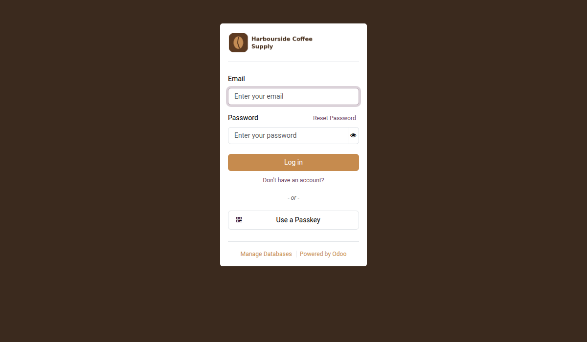
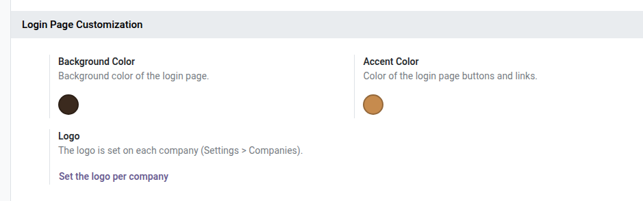

Login Page Branding
Give your Odoo login page the look of your brand — without touching the code.
By default, the Odoo login page shows the framework's standard colors and logo.
For your users and customers, it is the very first image they see of your solution —
and it does not reflect your visual identity at all.
Changing this rendering normally requires overriding QWeb templates or working in the source code,
which is out of reach for a functional administrator.
What it adds
-
🎨 Custom background color — choose any color from a visual picker in Settings; the login page adapts immediately.
-
✅ Accent color on buttons and links — the "Log in" button and the links automatically take on your brand color, with no manual CSS.
-
🏢 A logo for each company — upload a logo dedicated to the login page (independent from the logo used on documents), configurable company by company.
Real screenshots
1. Your colors on the login page
Background, buttons and links take your colors, and the login page shows its own logo. No code, no theme.

2. Two colors in the Settings
Pick the background and accent colors in the general settings; the logo is set on each company.

Why install it
-
Zero code required: everything is configured from Settings > Login Page Customization, available to any Odoo administrator.
-
A polished first impression: your users and customers see your brand from the login screen onward, which builds trust and a sense of belonging.
-
Multi-company: each company can have its own login logo, useful for groups or resellers managing several entities.
-
Open source (LGPL-3): no subscription, no cost, freely modifiable.
License LGPL-3 — compatible with Odoo 20.0. Support: apps@odooskills.com.